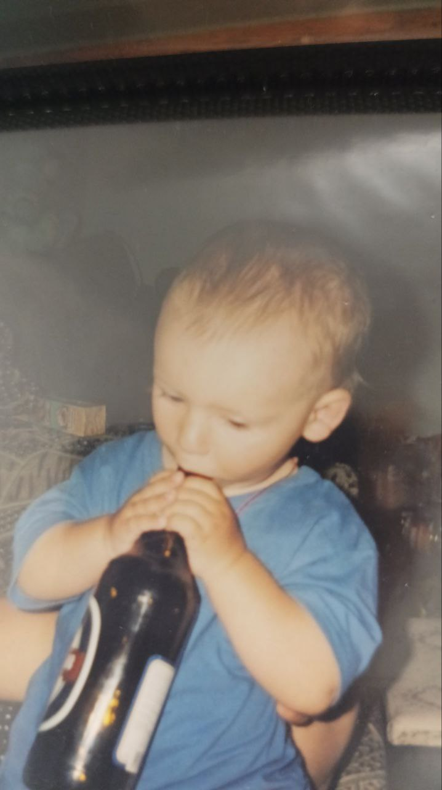

Про нас
Наша історія та команда
FoodFinder – це сучасний сервіс, який допомагає Вам знаходити найкращі ресторани у будь-якій області України. Ми прагнемо зробити пошук кулінарних шедеврів простим та приємним, щоб кожен міг насолоджуватися смачною їжею.
Наша команда складається з ентузіастів, які об'єдналися, щоб створити інноваційний продукт. Ми віримо, що якісна їжа має надихати і дарувати позитивні емоції, а наша платформа допомагає віднайти місця, де це можливо.

Іващишин Володимир
Засновник

Іващишин Володимир
Головний розробник

ChatGPT
Помічник розробника :)